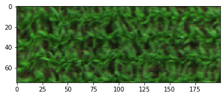
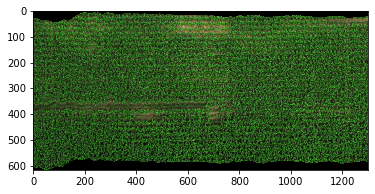

2.1.3. hsio¶
-
class
hs_process.hsio(fname_in=None, name_long=None, name_plot=None, name_short=None, str_plot='plot_', individual_plot=False, fname_hdr_spec=None)[source]¶ Bases:
objectClass for reading and writing hyperspectral data files, as well as accessing, interpreting, and modifying its associated metadata. With a hyperspectral data file loaded via
hsio, there is simple functionality to display the datacube image as a multi-band render, as well as for saving a datacube as a 3-band geotiff.hsiorelies heavily on the Spectral Python package.Methods Summary
read_cube([fname_hdr, overwrite, name_long, ...])Reads in a hyperspectral datacube using the Spectral Python package.
read_spec(fname_hdr_spec)Reads in a hyperspectral spectrum file using the using the Spectral Python package.
set_io_defaults([dtype, force, ext, ...])Sets any of the ENVI file writing parameters to
hsio; if any parameter is left unchanged from its default, it will remain as-is (it will not be set).show_img([spyfile, band_r, band_g, band_b, ...])Displays a datacube as a 3-band RGB image using Matplotlib.
write_cube(fname_hdr, spyfile[, metadata, ...])Wrapper function that accesses the Spectral Python package to save a datacube to file.
write_spec(fname_hdr_spec, df_mean, df_std)Wrapper function that accesses the Spectral Python package to save a single spectra to file.
write_tif(fname_tif[, spyfile, metadata, ...])Wrapper function that accesses the GDAL Python package to save a small datacube subset (i.e., three bands or less) to file.
Methods Documentation
-
read_cube(fname_hdr=None, overwrite=True, name_long=None, name_short=None, name_plot=None, individual_plot=False)[source]¶ Reads in a hyperspectral datacube using the Spectral Python package.
- Parameters
fname_hdr (
str) -- filename of datacube to be read (default:None).overwrite (
bool) -- Whether to overwrite any of the previous user-passed variables, includingname_long,name_plot, andname_short. If variables are already set andoverwriteisFalse, they will remain the same. If variables are set andoverwriteisTrue, they will be overwritten based on typcial file naming conventions of Resonon/Spectronon software. Any of the user-passed variables (e.g.,name_long, etc.) will overwrite those that were set previously whetheroverwriteisTrueorFalse(default:False).name_long (
str) -- Spectronon processing appends processing names to the filenames; this indicates those processing names that are repetitive and can be deleted from the filename following processing (default:None).name_short (
str) -- The base name of the image file (see note above aboutname_long; default:None).name_plot (
str) -- numeric text that describes the plot number (default:None).individual_plot (
bool) -- Indicates whether image (and its filename) is for an individual plot (True), or for many plots (False; default:False).
Note
hs_processwill search forname_long,name_plot, andname_shortbased on typical file naming behavior of Resonon/ Spectronon software. If any of these parameters are passed by the user, however, that will take precedence over "searching the typical file nameing behavior".Example
Load and initialize
hsio>>> from hs_process import hsio >>> fname_hdr = r'F:\nigo0024\Documents\hs_process_demo\Wells_rep2_20180628_16h56m_pika_gige_7-Radiance Conversion-Georectify Airborne Datacube-Convert Radiance Cube to Reflectance from Measured Reference Spectrum.bip.hdr' >>> io = hsio() # initialize an instance of the hsio class (note there are no required parameters)
Load datacube using
hsio.read_cube>>> io.read_cube(fname_hdr) >>> io.spyfile Data Source: 'F:\nigo0024\Documents\hs_process_demo\Wells_rep2_20180628_16h56m_pika_gige_7-Radiance Conversion-Georectify Airborne Datacube-Convert Radiance Cube to Reflectance from Measured Reference Spectrum.bip' # Rows: 617 # Samples: 1827 # Bands: 240 Interleave: BIP Quantization: 32 bits Data format: float32
Check
name_long,name_short, andname_plotvalues derived from the filename>>> io.name_long '-Radiance Conversion-Georectify Airborne Datacube-Convert Radiance Cube to Reflectance from Measured Reference Spectrum.bip.hdr'
>>> io.name_plot '7'
>>> io.name_short 'Wells_rep2_20180628_16h56m_pika_gige_7'
-
read_spec(fname_hdr_spec)[source]¶ Reads in a hyperspectral spectrum file using the using the Spectral Python package.
- Parameters
fname_hdr_spec (
str) -- filename of spectra to be read.
Example
Load and initialize
hsio>>> from hs_process import hsio >>> fname_hdr = r'F:\nigo0024\Documents\hs_process_demo\Wells_rep2_20180628_16h56m_pika_gige_7-mean.spec.hdr' >>> io = hsio() # initialize an instance of the hsio class (note there are no required parameters)
Load datacube using
hsio.read_spec>>> io.read_spec(fname_hdr) >>> io.spyfile_spec Data Source: 'F:\nigo0024\Documents\hs_process_demo\Wells_rep2_20180628_16h56m_pika_gige_7-mean.spec' # Rows: 1 # Samples: 1 # Bands: 240 Interleave: BIP Quantization: 32 bits Data format: float32
Check
name_long,name_short, andname_plotvalues derived from the filename>>> io.name_long '-mean.spec.hdr'
>>> io.name_short 'Wells_rep2_20180628_16h56m_pika_gige_7'
>>> io.name_plot '7'
-
set_io_defaults(dtype=False, force=None, ext=False, interleave=False, byteorder=False)[source]¶ Sets any of the ENVI file writing parameters to
hsio; if any parameter is left unchanged from its default, it will remain as-is (it will not be set).- Parameters
dtype (
numpy.dtypeorstr) -- The data type with which to store the image. For example, to store the image in 16-bit unsigned integer format, the argument could be any of numpy.uint16, 'u2', 'uint16', or 'H' (default=``False``).force (
bool) -- Ifhdr_fileor its associated image file exist,force=Truewill overwrite the files; otherwise, an exception will be raised if either file exists (default=``None``).ext (
str) -- The extension to use for saving the image file; if not specified, a default extension is determined based on theinterleave. For example, ifinterleave``='bip', then ``extis set to 'bip' as well. Ifextis an empty string, the image file will have the same name as the .hdr, but without the '.hdr' extension (default:False).interleave (
str) -- The band interleave format to use for writing the file;interleaveshould be one of 'bil', 'bip', or 'bsq' (default=``False``).byteorder (
intorstr) -- Specifies the byte order (endian-ness) of the data as written to disk. For little endian, this value should be either 0 or 'little'. For big endian, it should be either 1 or 'big'. If not specified, native byte order will be used (default=``False``).
Example
Load and initialize
hsio>>> from hs_process import hsio >>> io = hsio() # initialize an instance of the hsio class
Check
defaults.envi_write>>> io.defaults.envi_write {'dtype': numpy.float32, 'force': False, 'ext': '', 'interleave': 'bip', 'byteorder': 0}
Modify
forceparameter and recheckdefaults.envi_write>>> io.set_io_defaults(force=True) >>> io.defaults.envi_write {'dtype': numpy.float32, 'force': True, 'ext': '', 'interleave': 'bip', 'byteorder': 0}
-
show_img(spyfile=None, band_r=120, band_g=76, band_b=32, vmin=None, vmax=None, cbar=True, inline=True)[source]¶ Displays a datacube as a 3-band RGB image using Matplotlib.
- Parameters
spyfile (
SpyFileobject ornumpy.ndarray) -- The data cube to display; ifNone, loads fromself.spyfile(default:None).band_r (
int) -- Band to display on the red channel (default: 120)band_g (
int) -- Band to display on the green channel (default: 76)band_b (
int) -- Band to display on the blue channel (default: 32)vmin/vmax (
scalar, optional) -- The data range that the colormap covers. By default, the colormap covers the complete value range of the supplied data (default:None).cbar (
bool) -- Whether to include a colorbar in the image (default:True).inline (
bool) -- IfTrue, displays in the IPython console; else displays in a pop-out window (default:True).
Example
Load packages
>>> from hs_process import hsio # load hsio >>> from hs_process import spatial_mod # load spatial mod
Load the datacube using
hsio.read_cube>>> fname_hdr = r'F:\nigo0024\Documents\hs_process_demo\Wells_rep2_20180628_16h56m_pika_gige_7-Radiance Conversion-Georectify Airborne Datacube-Convert Radiance Cube to Reflectance from Measured Reference Spectrum.bip.hdr' >>> io = hsio() # initialize an instance of the hsio class >>> io.read_cube(fname_hdr)
Perform simple spatial cropping via
spatial_mod.crop_single>>> my_spatial_mod = spatial_mod(io.spyfile) # initialize spatial_mod instance to crop the image >>> array_crop, metadata = my_spatial_mod.crop_single(pix_e_ul=250, pix_n_ul=100, crop_e_m=8, crop_n_m=3)
Show an RGB render of the cropped image using
hsio.show_img>>> io.show_img(array_crop)
-
write_cube(fname_hdr, spyfile, metadata=None, dtype=None, force=None, ext=None, interleave=None, byteorder=None)[source]¶ Wrapper function that accesses the Spectral Python package to save a datacube to file.
- Parameters
fname_hdr (
str) -- Output header file path (with the '.hdr' extension).spyfile (
SpyFileobject ornumpy.ndarray) -- The hyperspectral datacube to save. Ifnumpy.ndarray, then metadata (dict) should also be passed.metadata (
dict) -- Metadata to write to the ENVI .hdr file describing the hyperspectral data cube being saved. IfSpyFileobject is passed tospyfile,metadatawill overwrite any existing metadata stored by theSpyFileobject (default=None).dtype (
numpy.dtypeorstr) -- The data type with which to store the image. For example, to store the image in 16-bit unsigned integer format, the argument could be any of numpy.uint16, 'u2', 'uint16', or 'H' (default=np.float32).force (
bool) -- Ifhdr_fileor its associated image file exist,force=Truewill overwrite the files; otherwise, an exception will be raised if either file exists (default=False).ext (
Noneorstr) -- The extension to use for saving the image file. If not specified or if set to an empty string (e.g.,ext=''), a default extension is determined using the same name asfname_hdr, except without the ".hdr" extension. Iffname_hdris provided without the "non-.hdr" extension (e.g., "bip"), then the extension is determined from theinterleaveparameter. For example, ifinterleave``='bip', then ``extis set to 'bip' as well. Use ofextis not recommended; instead, just setfname_hdrwith the correct extension or useinterleaveto set the extension (default:None; determined fromfname_hdrorinterleave).interleave (
str) -- The band interleave format to use for writing the file;interleaveshould be one of 'bil', 'bip', or 'bsq' (default='bip').byteorder (
intorstr) -- Specifies the byte order (endian-ness) of the data as written to disk. For little endian, this value should be either 0 or 'little'. For big endian, it should be either 1 or 'big'. If not specified, native byte order will be used (default=None).
Note
If
dtype,force,ext,interleave, andbyteorderare not passed, default values will be pulled fromhsio.defaults. Thus,hsio.defaultscan be modified prior to callinghsio.write_cube()to avoid having to pass each of thes parameters in thehsio.write_cube()function (see thehsio.set_io_defaults()function for support on setting these defaults and for more information on the parameters). Each of these parameters are passed directly to the Spectral Pythonenvi.save_image()function. For more information, please refer to the Spectral Python documentation.Example
Load packages and the datacube
>>> from hs_process import hsio # load hsio >>> from hs_process import spatial_mod # load spatial mod >>> fname_hdr_in = r'F:\nigo0024\Documents\hs_process_demo\Wells_rep2_20180628_16h56m_pika_gige_7-Radiance Conversion-Georectify Airborne Datacube-Convert Radiance Cube to Reflectance from Measured Reference Spectrum.bip.hdr' >>> io = hsio() # initialize the hsio class >>> io.read_cube(fname_hdr_in)
Perform simple spatial cropping via
spatial_mod.crop_singleto generate a new datacube>>> my_spatial_mod = spatial_mod(io.spyfile) # initialize spatial_mod instance to crop the image >>> array_crop, metadata = my_spatial_mod.crop_single(pix_e_ul=250, pix_n_ul=100, crop_e_m=8, crop_n_m=3)
Save the datacube using
hsio.write_cube>>> fname_hdr = r'F:\nigo0024\Documents\hs_process_demo\Wells_rep2_20180628_16h56m_pika_gige_7-cropped.bip.hdr' >>> io.write_cube(fname_hdr, array_crop, metadata=metadata) Saving F:\nigo0024\Documents\hs_process_demo\Wells_rep2_20180628_16h56m_pika_gige_7-cropped.bip
Load the datacube into Spectronon for visualization

-
write_spec(fname_hdr_spec, df_mean, df_std, metadata=None, dtype=None, force=None, ext=None, interleave=None, byteorder=None)[source]¶ Wrapper function that accesses the Spectral Python package to save a single spectra to file.
- Parameters
fname_hdr_spec (
str) -- Output header file path (with the '.hdr' extension). If the extension is explicitely specified infname_hdr_specand theextparameter is also specified,fname_hdr_specwill be modified to conform to the extension set using theextparameter.df_mean (
pandas.Seriesornumpy.ndarray) -- Mean spectra, stored as a df row, where columns are the bands.df_std (
pandas.Seriesornumpy.ndarray) -- Standard deviation of each spectra, stored as a df row, where columns are the bands. This will be saved to the .hdr file.dtype (
numpy.dtypeorstr) -- The data type with which to store the image. For example, to store the image in 16-bit unsigned integer format, the argument could be any of numpy.uint16, 'u2', 'uint16', or 'H' (default=np.float32).force (
bool) -- Ifhdr_fileor its associated image file exist,force=Truewill overwrite the files; otherwise, an exception will be raised if either file exists (default=False).ext (
Noneorstr) -- The extension to use for saving the image file. If not specified or if set to an empty string (e.g.,ext=''), a default extension is determined using the same name asfname_hdr_spec, except without the ".hdr" extension. Iffname_hdr_specis provided without the "non-.hdr" extension (e.g., "bip"), then the extension is determined from theinterleaveparameter. For example, ifinterleave``='bip', then ``extis set to 'bip' as well. Use ofextis not recommended; instead, just setfname_hdr_specwith the correct extension or useinterleaveto set the extension (default:None; determined fromfname_hdr_specorinterleave).interleave (
str) -- The band interleave format to use for writing the file;interleaveshould be one of 'bil', 'bip', or 'bsq' (default='bip').byteorder (
intorstr) -- Specifies the byte order (endian-ness) of the data as written to disk. For little endian, this value should be either 0 or 'little'. For big endian, it should be either 1 or 'big'. If not specified, native byte order will be used (default=None).metadata (
dict) -- Metadata to write to the ENVI .hdr file describing the spectra being saved; ifNone, will try to pull metadata template fromhsio.spyfile_spec.metadataorhsio.spyfile.metadata(default=None).
Example
Load packages and the datacube
>>> from hs_process import hsio # load hsio >>> fname_hdr_in = r'F:\nigo0024\Documents\hs_process_demo\Wells_rep2_20180628_16h56m_pika_gige_7-Radiance Conversion-Georectify Airborne Datacube-Convert Radiance Cube to Reflectance from Measured Reference Spectrum.bip.hdr' >>> io = hsio() # initialize the hsio class (note there are no required parameters) >>> io.read_cube(fname_hdr_in)
Calculate spectral mean via
hstools.mean_datacube>>> spec_mean, spec_std, _ = io.tools.mean_datacube(io.spyfile) >>> fname_hdr_spec = r'F:\nigo0024\Documents\hs_process_demo\Wells_rep2_20180628_16h56m_pika_gige_7-mean.spec.hdr'
Save the new spectra to file via
hsio.write_spec>>> io.write_spec(fname_hdr_spec, spec_mean, spec_std) Saving F:\nigo0024\Documents\hs_process_demo\Wells_rep2_20180628_16h56m_pika_gige_7-mean.spec
Open Wells_rep2_20180628_16h56m_pika_gige_7-mean.spec in Spectronon for visualization

-
write_tif(fname_tif, spyfile=None, metadata=None, fname_in=None, projection_out=None, geotransform_out=None, show_img='inline')[source]¶ Wrapper function that accesses the GDAL Python package to save a small datacube subset (i.e., three bands or less) to file.
- Parameters
fname_tif (
str) -- Output image file path (with the '.tif' extension).spyfile (
SpyFileobject ornumpy.ndarray, optional) -- The data cube to save. Ifnumpy.ndarray, then metadata (dict) should also be passed. IfNone, uses hsio.spyfile (default:None).metadata (
dict) -- Metadata information; ifgeotransform_outis not passed, "map info" is accessed frommetadataandgeotransform_outis created from that "map info".fname_in (
str, optional) -- The filename of the image datacube to be read in initially. This is potentially useful ifprojection_outand/orgeotransform_outare not passed and anumpy.ndarrayis passed as thespyfile- in this case,write_tif()usesfname_into load thefname_indatacube via GDAL, which can in turn be used to load the projection or geotransform information for the output geotiff (default: None).projection_out (
str) -- The GDAL projection to use while writing the geotiff. Applied using gdal.driver.dataset.SetProjection() (default:None;hsio.projection_out)geotransform_out (
str) -- The GDAL geotransform to use while writing the geotiff. Applied using gdal.driver.dataset.SetGeoTransform() (default:None;hsio.geotransform_out)show_img (
boolorstr) -- Whether to display a render of the image being saved as a geotiff. Must beFalse(does not display the image), "inline" (displays the image inline using the IPython console), or "popout" (displays the image in a pop-out window; default: "inline").
Example
Load packages and the datacube
>>> from hs_process import hsio # load hsio >>> fname_hdr_in = r'F:\nigo0024\Documents\hs_process_demo\Wells_rep2_20180628_16h56m_pika_gige_7-Radiance Conversion-Georectify Airborne Datacube-Convert Radiance Cube to Reflectance from Measured Reference Spectrum.bip.hdr' >>> io = hsio() # initialize the hsio class >>> io.read_cube(fname_hdr_in)
Save an RGB render of the datacube to file via
hsio.write_tif>>> fname_tif = r'F:\nigo0024\Documents\hs_process_demo\Wells_rep2_20180628_16h56m_pika_gige_7.tif' >>> io.write_tif(fname_tif, spyfile=io.spyfile, fname_in=fname_hdr_in) Either `projection_out` is `None` or `geotransform_out` is `None` (or both are). Retrieving projection and geotransform information by loading `hsio.fname_in` via GDAL. Be sure this is appropriate for the data you are trying to write. Clipping input data to the valid range for imshow with RGB data ([0..1] for floats or [0..255] for integers).
Open Wells_rep2_20180628_16h56m_pika_gige_7.tif in QGIS with the plot boundaries overlaid

-